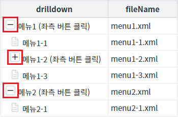
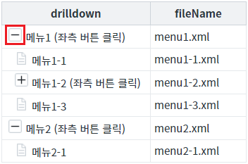
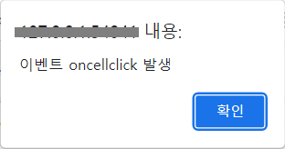
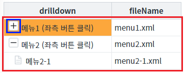
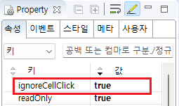

GridView의 속성 'ignoreCellClick' 설정 비교 예제입니다. 이 속성은 컬럼의 속성 'inputType'의 설정 값이 'drilldown'인 셀에 표시된 '확장/축소' 버튼이 클릭되었을 때 동작합니다.
속성의 설정 값에 따른 동작은 다음과 같습니다.
true : GridView의 이벤트 'oncellclick'가 발생하지 않음.
false : (기본 값) GridView의 이벤트 'oncellclick'가 발생함.
GridView의 속성 'ignoreCellClick'에 설정된 값과는 무관하게, 컬럼의 속성 'inputType'이' drilldown'인 컬럼에 출력된 문자열을 클릭한 경우에는 이벤트 'oncellclick'가 발생됩니다.
셀의 '확장/축소' 버튼 클릭 시 'oncellclick'이 발생
셀의 '확장/축소' 버튼 클릭 시 'oncellclick'이 미발생
STEP 1. 초기 상태를 확인합니다.
GridView의 첫 번째 컬럼의 속성 'inputType'이 'drilldown'으로 설정되어 있습니다. 로우의 확장/축소(펼치기/접기)가 가능한 셀은 문자열 좌측에 '확장/축소' 버튼이 출력됩니다.
그림 1.브라우저(Chrome) 실행 예시

STEP 2. 버튼 '확장/축소' 클릭하기
영역 '(기본 설정) 버튼 '확장/축소'를 클릭하면 이벤트 'oncellclick' 발생'에 구성된 GridView에서 테스트합니다.
컬럼 'drilldown'에 출력된 버튼을 클릭합니다.그림 2.브라우저(Chrome) 실행 예시

STEP 3. 실행된 결과를 확인합니다.
브라우저 'alert'으로 '이벤트 oncellclick 발생'이 출력되고, GridView의 로우가 축소됩니다.
그림 3.브라우저(Chrome) 실행 예시 - alert

그림 4.브라우저(Chrome) 실행 예시 - GridVeiw

STEP 1. 초기 상태를 확인합니다.
GridView의 첫 번째 컬럼의 속성 'inputType'이 'drilldown'으로 설정되어 있습니다. 로우의 확장/축소(펼치기/접기)가 가능한 셀은 문자열 좌측에 '확장/축소' 버튼이 출력됩니다.
그림 5.브라우저(Chrome) 실행 예시
STEP 2. 버튼 '확장/축소' 클릭하기
영역 '버튼 '확장/축소'를 클릭하면 이벤트 'oncellclick' 미발생'에 구성된 GridView에서 테스트합니다.
컬럼 'drilldown'에 출력된 버튼을 클릭합니다.그림 6.브라우저(Chrome) 실행 예시
STEP 3. 실행된 결과를 확인합니다.
GridView의 로우가 축소됩니다. (브라우저 'alert'이 표시되지 않습니다.)
그림 7.브라우저(Chrome) 실행 예시 - GridVeiw
STEP 1. GridView의 속성을 지정합니다.
[필수] ignoreCellClick="true"
그림 8.웹스퀘어5 SP5 스튜디오의 Property View(속성창) 예시

소스 본문
<!-- GridView 본문 예시 --> <w2:gridView ignoreCellClick="true" id="grd_exam2" ev:oncellclick="scwin.grd_exam2_oncellclick"> <!-- 중략 --> </w2:gridView>
ignoreCellClick
[웹스퀘어5 SP5 개발 가이드] GridView
링크 : https://docs1.inswave.com/sp5_user_guide/86bdcf48029b958b